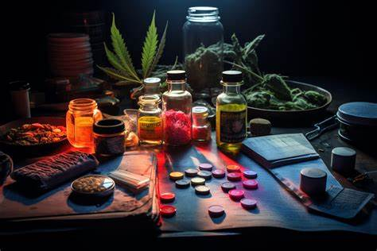

Explora información extensa y confiable sobre las principales drogas psicoactivas, sus efectos, consecuencias y datos relevantes.
Centro de Atención Ciudadana contra las Adicciones: 800 911 2000 -Monte Fénix Querétaro: 442 212 2543 -Centro Constitución de 1917 (Ciudad de México): 55 5970 3397 -Clínica para Adicciones (Ecatepec de Morelos): 55 6967 3086 -Centro Médico Especializado en Rehabilitación (Texcoco): 595 925 0949 -Consejo Ciudadano para la Seguridad y Justicia: 555 533 5533 -Línea de Ayuda Origen: 800 015 16 17 -Centro de Integración Juvenil: 555 212 1212 / 555 999 4949